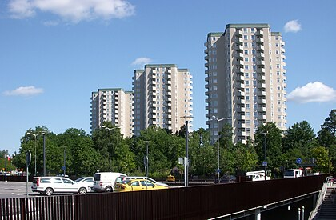
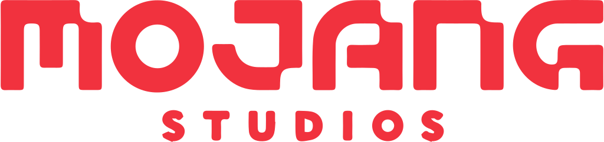

Stockholm est la plus grande ville et la capitale de la Suède.
Elle est le siège du gouvernement et du parlement, ainsi que le
lieu de résidence officielle du monarque suédois (actuellement
Charles XVI Gustave).

Mojang Studios est un studio suédois de jeux vidéo, fondé en mai
2009 sous la dénomination Mojang Specifications par Markus
Persson alias « Notch », Carl Manneh et Jakob Porsér. Mojang
Studios est principalement connu pour avoir créé le jeu
Minecraft.

Minecraft est un jeu vidéo de type aventure « bac à sable »
(construction complètement libre) développé par le Suédois
Markus Persson, alias Notch, puis par la société Mojang Studios.
Il s'agit d'un univers composé de voxels et généré de façon
procédurale, qui intègre un système d'artisanat axé sur l'exploitation
puis la transformation de ressources naturelles (minéralogiques,
fossiles, animales et végétales).